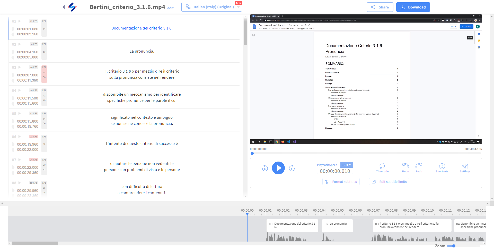

Come editor ho usato un servizio online chiamato HappyScribe che permette di generare in maniera automatica i sottotitoli, anche se con eventuali errori.
Punti di forza:
Semplice nell'utilizzo, lo stesso sito offre un bellissimo tutorial durante la generazione dei sottotitoli che descrive come utilizzare l'editor.
Avere sottotitolazione grezza (Autogenerata) che fa risparimiare tempo (Se il video ha un audio abbastanza pulito) e con poche correzioni e in pochi minuti è possibile ottenere una sottotitolazione perfetta.
Effettuare modifiche facilemente modificando anche il tempo di visualizzazione di un sottotitolo.
Effettuare una traduzione in più lingue dei sottotitoli. (Non tutti i sottotitoli vengono sempre tradotti correttamente).
Impostare un limite di caratteri all'interno di un sottotitolo, il numero di linee massime e altre impostazioni che permetto di suddividere in maniera ottimale i sottotitoli.
L'esportazione in diversi formati di file di sottotitolazione, ad esempio: SubRip, WebVTT, EBU-STL, Text Document e altre estensioni per programmi esterni.
L'esportazione del video con i sottotitoli integrati. (Questo comporterà un successivo rendering del video per l'applicazione dei sottotitoli).
Punti deboli:
Il servizio è a pagamento se si supera 1h di video
Screenshot:

GitHub & GitHub Pages:
Non ho avuto particolari difficolta con l'utilizzo di GitHub e di GitHub Pages, siccome ho già avuto qualche esperienza con questi strumenti. In particolare con GitHub sul mio account personale non scolastico.
Video con sottotitoli:
In seguito è presente il video con i sottotitoli sia in italiano che in inglese generati e scritti tramite l'editor HappyScribe. A causa del limite di 100 MB imposto da GitHub ho dovuto riccorrere a una piattaforma esterna, Youtube.